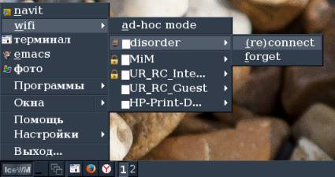
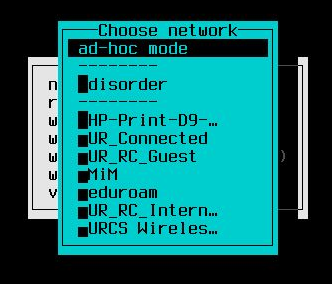

This website was shut down for several years. Now in 2020 I am slowly resurrecting it; expect missing files and other errors...
See my github page.
For years I used graphic utilities (wicd and NetworkManager) on my laptops to establish wireless network connections.
Then I realized that linux actually has a number of reliable command-line utilites (iwlist, ifup, ifdown, isc-dhcp-server, wpa_supplicant, hostapd) that provide almost the same functionality as wicd or NetworkManager.
I wrote a perl frontend for these command-line utilites which can be used to connect to (or create a) wifi network. I primarily use it with IceWM; howerver, it is also compatible with a pdmenu menu program which can be launched from any terminal, even in text mode.
The source and debian package are available here. I believe that it is stable (>6 month testing in debian jessie and stretch); please email me if it does not install or work properly.
These screenshots demonstrate wifi management in IceWM and in console
(using pdmenu):


where "disorder" is the name of my wireless network, and signal strength in graphically shown in front of every
network's name.
Apart from switching between wifi-networks, wifi-switcher can be turned into the wifi-server (adhoc) mode with an ftp server. This is especially handy for my wife's windows smartphone that does not have a slot for an external sdhc-card: I connect the phone to the adhoc wifi-network, log in to the ftp-server using TotalCommander and move the files (photo/audio/video) from/to the smartphone.
Lisp is my favorite programming language; unfortunately, it is not so widely used and there are still no lisp-interfaces to some handy libraries. I like to work with libconfig library in my C++ projects; it is universal (available for C, C++, python, perl), and its syntax is powerful enough for my needs. (I always use libconfig unless I have to deal with large amounts of data.)
cl-libconfig is the common lisp interface to libconfig; it is
available on github.
If you have quicklisp installed, place cl-libconfig source into the
~/quicklisp/local-projects/libconfig/ directory, and then you can
use it in lisp (say, sbcl) via the (ql:quickload :libconfig) command.
I do not trust clouds. I think that they would use my files (if they could) to gather information about my habits, income, etc., and then sell it (without paying me anything) to those annoying people who regularly call me trying to sell something. Any closed-source software written by companies like Google or Dropbox is potentially a spyware. So I use Russian yandex-disk and Swiss pcloud to store encrypted backup archives. These are the only companies providing free cloud storage I know who allow to up(down)load the files using mount.davfs included in standard Debian repository.
Previously I used yandex-disk proprietary linux client jailed in apparmor. For daily backups I use backup2l with gpg-encryption so that even my file names are not accessible to cloud owners.
Esy (stands for "easy synchronization") is a lisp-code which synchronizes files/directories between different computers; it is not necessary that all the hosts are online. When a file/directory on one host is renamed/moved/erased/modified/chmod-ed, this is recorded by the esy daemon. When I stopped working on this host (say, in the office), I tell the daemon to stop:
echo "quit" > ~/.esy/message.ctl ; mkdir ~/.esy/do-read.ctl
It creates an archive of newly created and modified files; (Only important files are monitored; the importance is flexibly encoded in configuration file.) Also a shell script with commands to unpack/rename/move/erase/chmod the files on another host is created. The sorce code together with examples of configuration, generated shell scripts, and logs is available on github page.
This project is unstable for now.